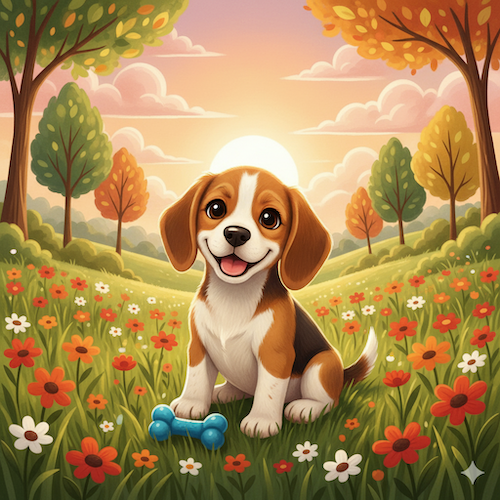
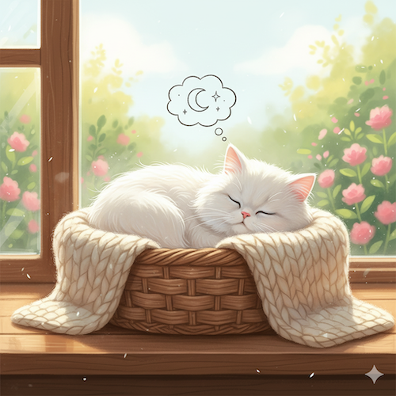
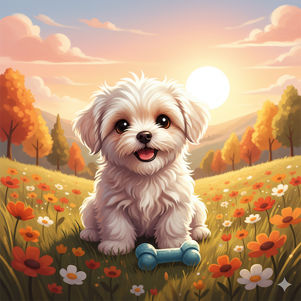
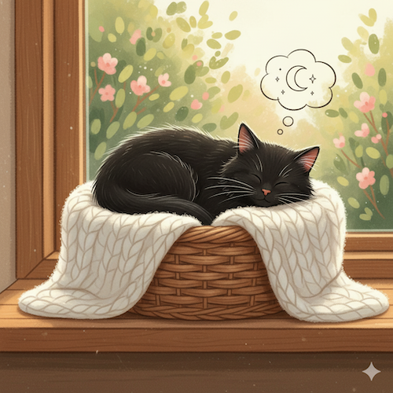
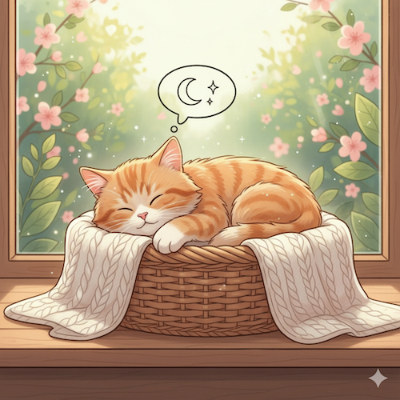
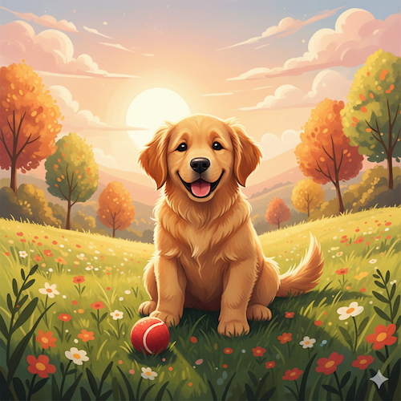
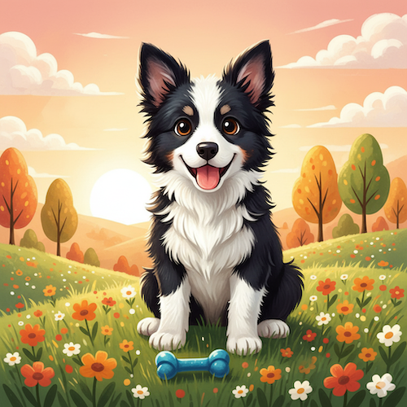
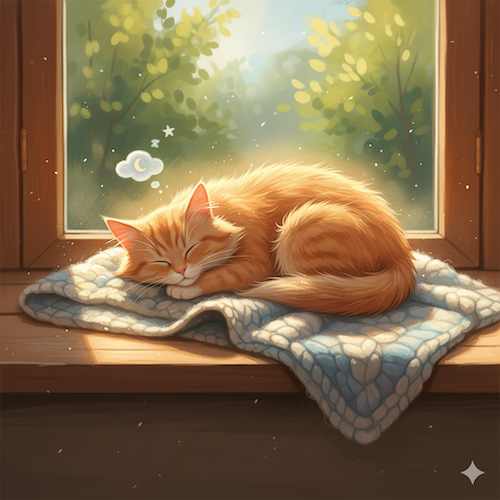
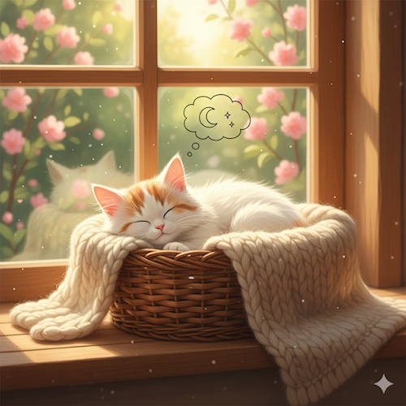
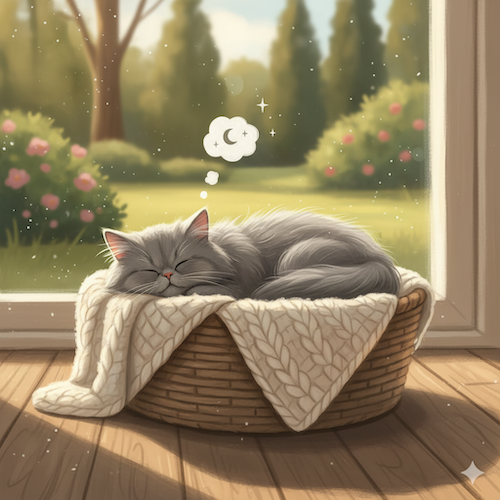

Responsywna Galeria Zdjęć
← Powrót do Lab 2

Pies rasy Beagle

Kot o białym umaszczeniu

Pies o białym umaszczeniu

Kot o czanym umaszczeniu

Mały kotek

Pies rasy lablador

Mały piesek

Kot o rudym umaszczeniu

Słodki piesek

Kot o szarym umaszczeniu